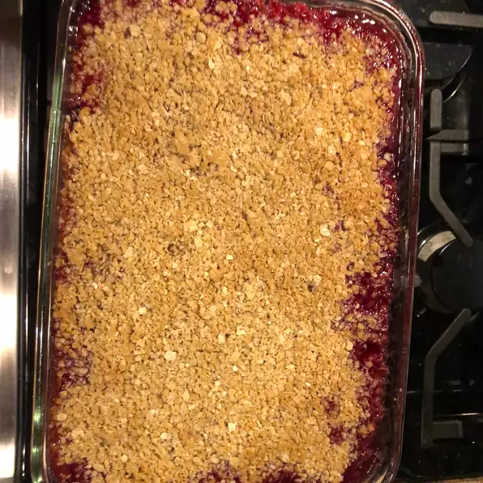

Rhubarb Crisp

Description
If you love rhubarb-strawberry mixtures, you'll love this sweet rhubarb crisp.
Ingredients
- 4 cups chopped rhubarb
- ¾ cup white sugar
- 2 tablespoons quick-cooking tapioca
- ½ teaspoon salt
- ½ (10 ounce) package frozen sliced strawberries
- 1 cup rolled oats
- ⅓ cup brown sugar
- ¼ cup sifted all-purpose flour
- ¼ cup butter, melted
Steps
- Preheat oven to 350 degrees F (175 degrees C).
- Mix rhubarb, white sugar, tapioca, and salt in a large bowl and toss to coat; let rest, stirring occasionally, for 30 minutes.
- Stir strawberries into the rhubarb mixture; spread into a casserole dish.
- Stir oats, brown sugar, flour, and butter together in a separate bowl until crumbly; sprinkle over the fruit mixture in the casserole dish.
- Bake in preheated oven until set, about 45 minutes.